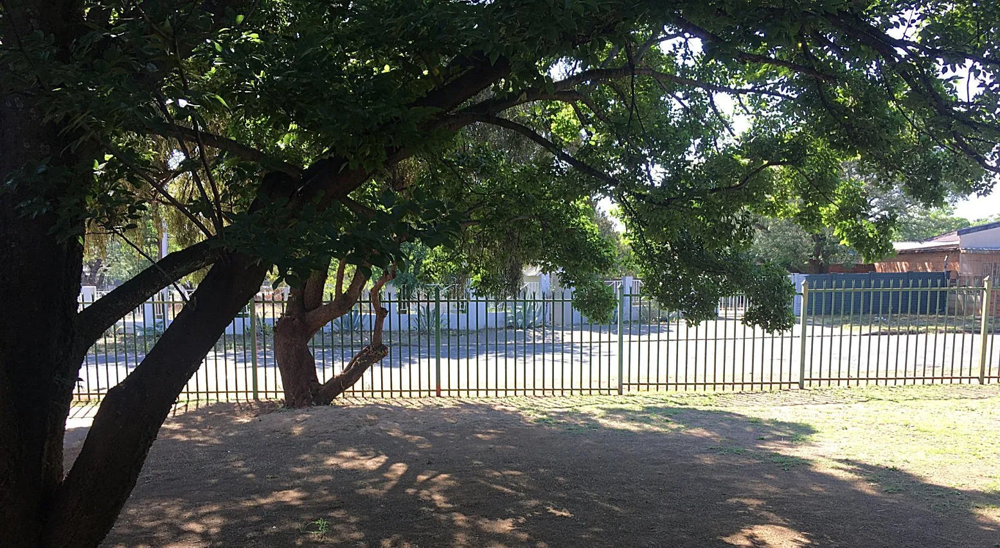

PRIMARY SCHOOL · PARENT FAQ
Frequently Asked Questions
Helpful answers for prospective families regarding Foundation & Intermediate phase learning, admissions requirements, and campus routines at Maartens Street.
BEFORE YOU APPLY
Understand the Primary pathway before choosing a grade.
The site explains the pathway structure while leaving current operational details—such as class allocation, exact timetable and grade-specific resources—to Ridgefield's approved information.
Which grades are included in Primary?
Ridgefield's Primary pathway is presented for Grades 1–7.
Where is the Primary school based?
The Primary pathway is presented at 22 Maartens Street, Bloemfontein.
How is learning organised across Grades 1–7?
The website groups progression into Grades 1–3 foundations, Grades 4–6 growing independence, and Grade 7 transition toward secondary-school expectations.
What learning areas are covered?
The planning framework includes literacy, Mathematics, broader natural and social learning, creative participation and learner development. The exact grade-specific programme should be confirmed with Ridgefield.
What does a typical Primary week look like?
Families should expect a balance of literacy and numeracy development, broader classroom learning, guided practice, independent work, feedback and age-appropriate participation. The official timetable determines exact periods and daily scheduling.
How is learner progress monitored?
The pathway focuses on academic outcomes together with reading, numeracy, learning habits, participation and increasing independence. Parents should confirm Ridgefield's current reporting cycle for the learner's grade.
How does Grade 7 transition work?
The pathway places additional emphasis on study routines, organisation, task planning and readiness for secondary-school expectations. Families can discuss the most suitable Ridgefield secondary pathway with the school.
Do I upload my child's documents online?
No. Sensitive learner documents are prepared for the admissions consultation and are not uploaded through the public application form.
Can I discuss grade placement before applying?
Yes. Contact Ridgefield to discuss the learner's current grade, school history and intended start before submitting the online application.
Ready to Explore Primary Further?
Review the foundational curriculum and learning areas, or start your online application with Primary already selected.